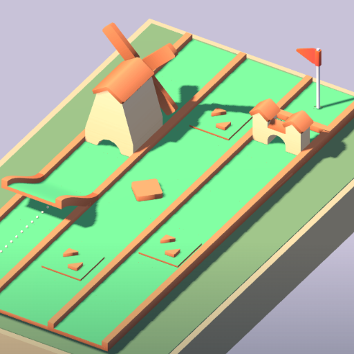

Loopback Links
Mini golf in three-hole rounds. Bank off the rails and time the moving gates.
Loopback Links is a miniature golf game with 54 layouts, six hazard styles and short three-hole rounds. Drag back to aim and set power, then release to putt, with a direction guide and power meter to help find the line. Bank off the rails, avoid round bumpers, time the moving gates, cross a sliding bridge and allow for sand that slows the ball. Sink all three holes to clear a round, aiming for par three on each. There is no time limit while you think, and each hole allows twelve strokes. Fewer strokes earn more points on the scorecard. Try any layout in practice, unlock campaign rounds with bronze, silver and gold medals, or play the daily three-hole challenge. Tokens earned in play unlock ball colors. Offline, no account. Interstitial ads show at breaks, and optional videos can undo a practice stroke or double your tokens.